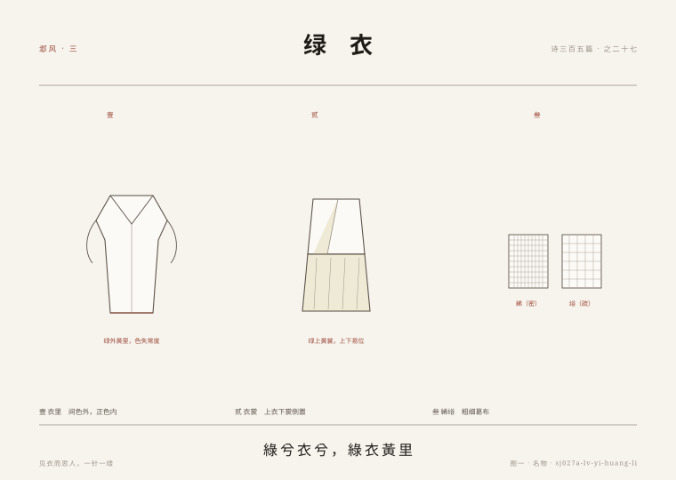
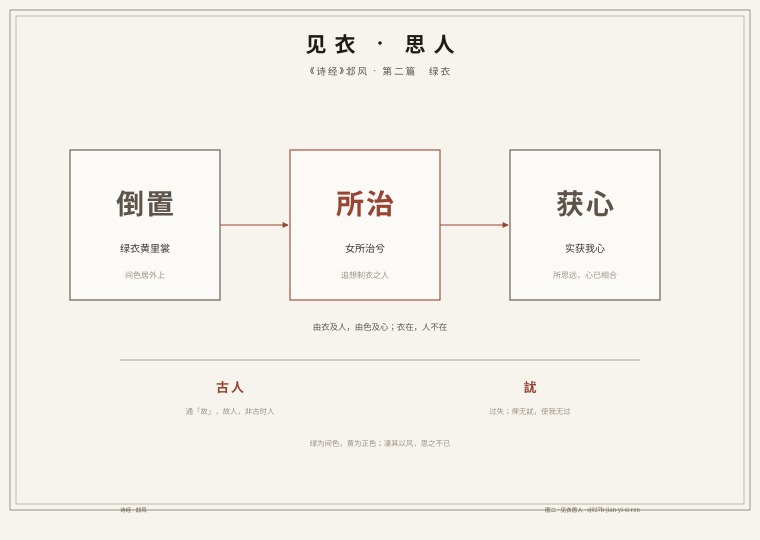

第二十七篇 绿衣
邶风 · 之三 SJ027
朗读 · 普通话
依经文正文朗读，句读从文；不配乐、不改速、不加拖腔。全库同一音色（豆包 TTS），非播音员录制。
一 解题
诗三判：
- 谁在说：一个见衣而思人的人。对着绿衣、黄里、黄裳、丝缕、絺绤，一层一层想下去，止不住。
- 说什么事：绿衣黄里，绿衣黄裳；绿兮丝兮，是那人所治；絺绤受风，凄其以凉。思古人，俾无訧，实获我心。
- 为何编在此：邶风第二篇。《柏舟》言志之不可转，此篇言情之不可已；一守一思，同属「心之忧」。卷三开篇两诗，一写志节，一写哀思。
《毛序》：「《绿衣》，卫庄姜伤己也。妾上僭，夫人失位，故作是诗。」——读作庄姜伤己，以绿为间色、黄为正色，刺妾僭嫡。
朱子《诗集传》：「庄公惑于嬖妾，夫人庄姜贤而失位，故作此诗。」——朱子承美刺之说；而旧另有悼亡一读，以为睹衣思亡故之人。
本库的看法：骨在见衣而思人。
绿为间色、黄为正色，「绿衣黄里」是正色倒置之象；《毛序》的伤己刺僭与悼亡说并列，不相裁断。无论所思为失位之妇还是已故之人，诗的质地是一样的：衣在，人不在；一针一缕，都是那人留下的。「我思古人，实获我心」——所思已远，而此心与之相合。
二 经文
第一章
绿兮衣兮，绿衣黄里。心之忧矣，曷维其已！
第二章
绿兮衣兮，绿衣黄裳。心之忧矣，曷维其亡！
第三章
绿兮丝兮，女所治兮。我思古人，俾无訧兮！
第四章
絺兮绤兮，凄其以风。我思古人，实获我心！
分章：毛传、朱子皆四章，章四句。前两章由衣及里、及裳，色之倒置；三章由衣及丝及治，追想其人；四章由葛衣及风，收束于心。四章一层比一层近人。
三 韵读
| 一 |
里、已 |
之部 |
| 二 |
裳、亡 |
阳部 |
| 三 |
治、訧 |
之部 |
| 四 |
风、心 |
侵部 |
一章之部沉郁，二章阳部悠长，「曷维其亡」欲忘而不能；四章侵部闭口收声，「实获我心」是全篇落脚声——思之既深，反觉此心已被那人所得。
四 字义与名物
- 绿——间色（苍黄之间）。黄——正色（中央正色）。古以黄为尊，绿为卑。
- 里——衣里，衬里。黄里，以黄为里，正色居内而间色居外，是倒置之象。
- 裳——下裳。上衣曰衣，下衣曰裳。
- 曷——何时。维——语助。已——止。亡（wáng）——通「忘」。
- 丝——制衣之丝缕。女（rǔ）——同「汝」，你。治——料理、织治。
- 古人——故人、旧人（所思之人）。不是「古时之人」。
- 俾（bǐ）——使。訧（yóu）——过失、尤过。「俾无訧」，使我免于过失。
- 絺（chī）——细葛布。绤（xì）——粗葛布。夏衣之材。
- 凄——凉。凄其以风，凉风凄然。
五 今译
第一章
绿啊衣啊，绿外衣、黄衬里。心里的忧愁，何时才能止住！
第二章
绿啊衣啊，绿上衣、黄下裳。心里的忧愁，何时能够忘掉！
第三章
绿啊丝啊，是你所织治的。我思念那位故人，使我得免于过失。
第四章
细葛啊粗葛啊，凉风吹来凄然。我思念那位故人，实在得了我的心。
译注：「亡」通「忘」，译「忘掉」；「女」同「汝」，指所思之人；「古人」译「故人」，不作「古人」；「俾无訧」译使我无过，「实获我心」译实在得我之心。
六 章旨
一章：衣里倒置。绿外黄里，色失常度；忧不能已。
二章：衣裳倒置。绿上黄下，上下易位；忧不能忘。
三章：追想其人。丝缕所治，皆出人手；思故人而赖其匡正。
四章：风凉心合。葛衣受风，凄然触怀；思之既深，此心与之相合。
前两章写「色之失」（间外正内、间上正下），后两章写「人之思」（治丝、葛风）。由衣及人，由色及心。
七 诗教
- 赋：睹衣思人，逐层指物；衣、里、裳、丝、絺绤皆实写，是赋。
- 观：可观一「思」。物在而人远，一针一缕皆成追念；所重者不在色刺，在情之真。
- 群：一身之衣，连着所思之人与共制之群；旧读为嫡媵之群，亦可存。
- 怨：怨思相连。「曷维其已」「曷维其亡」近怨；末章归于「获心」，怨而不伤。
八 分寸与边界
- 不可把此篇只读作刺妾僭嫡的政治诗。伤己刺僭与悼亡两说并列；先立美刺，就把睹衣思人的一层压没了。
- 不可把「古人」解作古代之人。它是故人、旧人，指所思念者。
- 不可把「亡」解作灭亡、死亡。此处通「忘」。
- 不可把绿、黄只当颜色好看。绿是间色、黄是正色；「绿衣黄里」「绿衣黄裳」是上下内外倒置之象，不可滑过。
- 不可把「俾无訧」解作「没有埋怨」。訧是过失；句言故人在则可匡我之失。
九 存疑
- 作意：庄姜失位伤己说（毛、朱）与悼亡说并列。本库两存，取「睹衣思人」之共性。
- 所思之人：一说嬖妾 /
嫡妻，一说亡故之夫或妻；诗中无男女明文，本库不坐实。
- 「绿衣」之制：间色为衣、正色为里裳，是否实有其服，抑为象喻，旧说不一；本库取象喻。
- 「古人」之「古」：一说通「故」，一说即「先世君子」。本库从故人。
- 三章「女所治」：女指所思之人，一说指制衣之女工；本库取前者，以承「我思古人」。
十 跨典
- 《邶风·柏舟》——同卷开篇。彼言志不可转，此言情不可已；一守一思，同为邶风之忧。
- 《唐风·葛生》「角枕粲兮，锦衾烂兮」——同是睹物思人，彼悼亡而此思故；衣衾之喻可对看。
- 《郑风·缁衣》「缁衣之宜兮」——同以衣起兴，彼好贤而改作，此思人而感伤。
- 《礼记·玉藻》「衣正色，裳间色」——古服色有正间之制，可证「绿衣黄里」为倒置。
- 《论语·乡党》「红紫不以为亵服」——古人于服色之辨甚严，正间之序非徒美观。
十一 双卡与图
双卡五对：
| 绿（间色） |
黄（正色） |
| 里（衣里） |
裳（下裳） |
| 衣（已成） |
丝（所治） |
| 絺（细葛） |
绤（粗葛） |
| 思古人 |
实获我心 |

图一 · 绿衣·黄里·絺绤 名物图

图二 · 见衣思人 义理图
读图三处：
- 绿在外、黄在内，画成两件对照：一章外绿内黄，二章上绿下黄；图上须分出里外、上下，颜色倒置一眼可辨。
- 丝缕从衣抽出一线：三章「女所治」，衣旁画一缕丝，见制衣之人。
- 絺绤是两种葛布：细葛纹理密，粗葛纹理疏；二格纹理疏密分开，不画成同一块布。